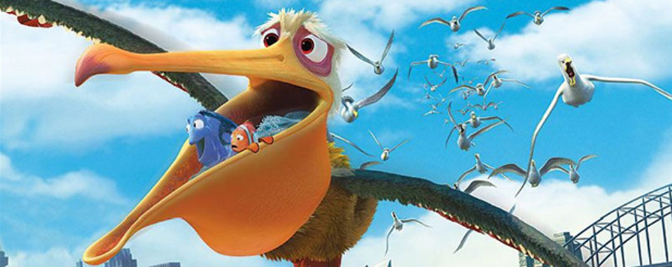
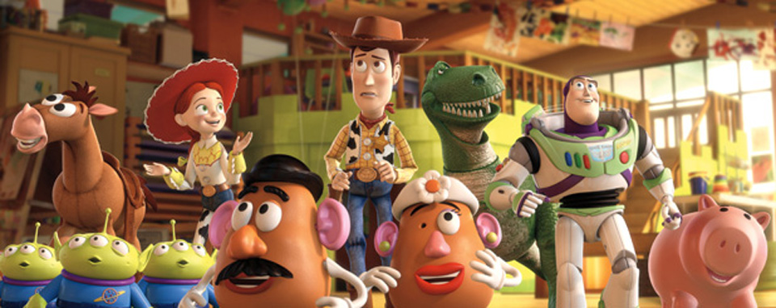
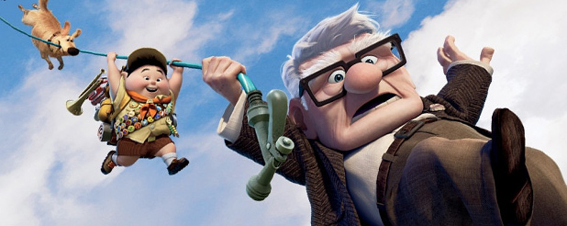
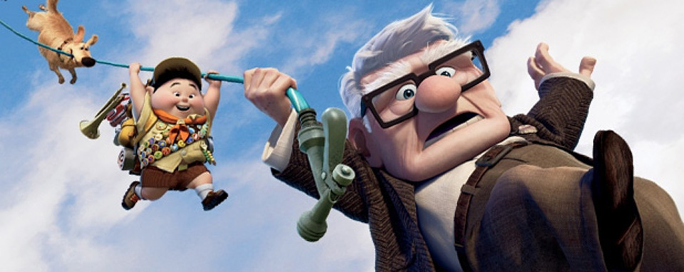
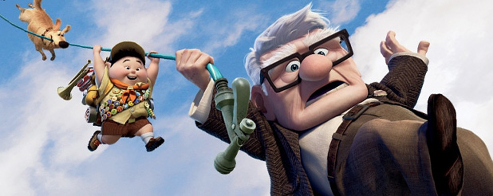

 


This is an example of a HTML caption with
a link
This Is Content
Fishers have few predators besides humans. They have been trapped since the 18th century for their fur. Their pelts were in such demand that they were extirpated from several parts of the United States in the early part of the 20th century. Conservation and protection measures have allowed the species to rebound, but their current range is still reduced from its historic limits.
In the 1920s, when pelt prices were high, some fur farmers attempted to raise fishers. However, their unusual delayed reproduction made breeding difficult. When pelt prices fell in the late 1940s, most fisher farming ended.
While fishers usually avoid human contact, encroachments into forest habitats have resulted in some